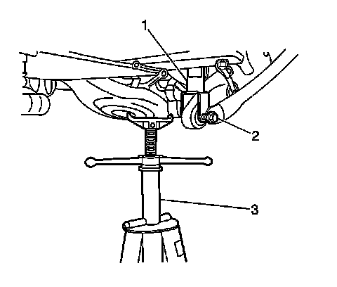
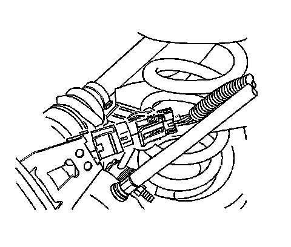
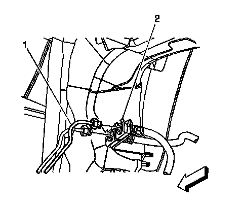
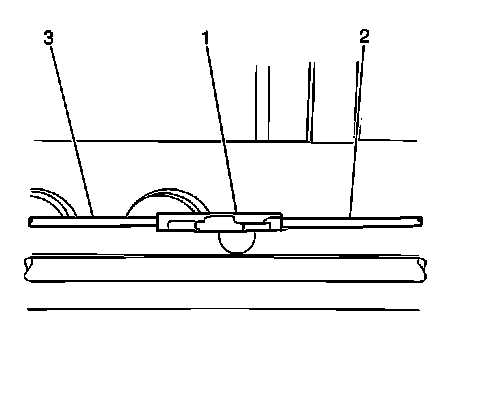
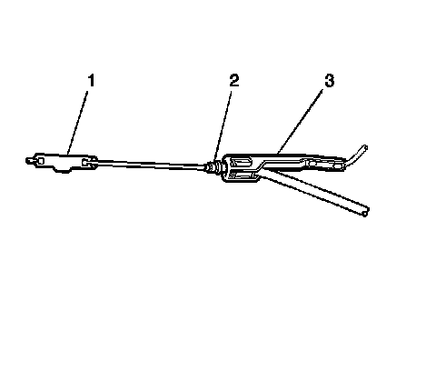
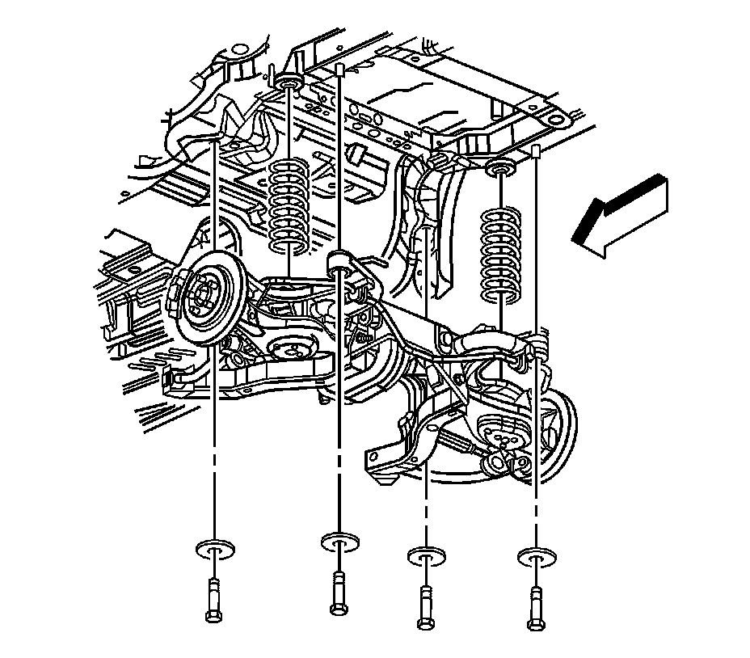
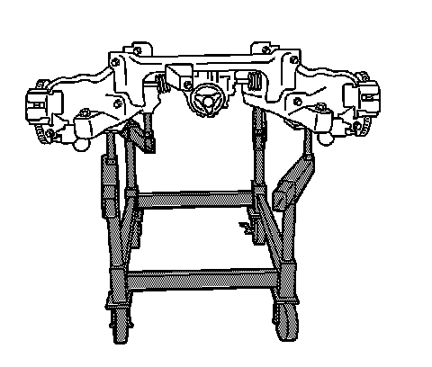
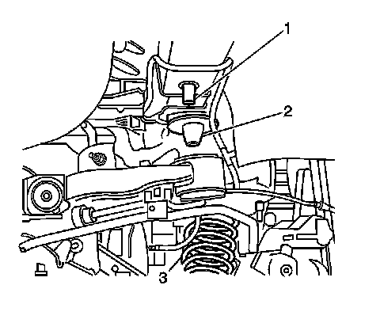

Rear Subframe: Service and Repair
Rear Frame Replacement
Tools Required
J 39580 Engine Support Stand
Removal Procedure
1.Raise and support the vehicle. Refer to Lifting and Jacking the Vehicle .
2.Remove the rear wheels. Refer to Tire and Wheel Removal and Installation .
3.Remove the exhaust system. Refer to Exhaust System Replacement .
4.Remove the propeller shaft from the differential. Refer to Rear Propeller Shaft Replacement .

Important:The lower control arms will drop approximately 1.5 inches when the shock to lower control arm bolts are removed.
5.Install the support fixture (3), in order to raise the lower control arm to relieve the tension from the shock.
6.Remove the shocks lower mounting bolt (2).
7.Remove the support fixture.

8.Disconnect the electrical connectors for the rear wheel speed sensors.
9.Disconnect the ABS wiring harness from the upper control arms.
10.Disconnect the rear suspension position sensor wiring harness from the frame.
11.Disconnect the rear suspension position sensor harness connector.
12.Disconnect the head lamp leveling wiring harness from the frame.
13.Disconnect the head lamp leveling sensor harness connector.

14.Disconnect the rear brake pipe lines (1) forward of the rear wheelhouse.

15.Remove the fastener for the brake pipe bracket (1).
16.Remove the brake pipe bracket (2) from the studs in the body.

17.Disconnect the intermediate park brake cable (2) from the front park brake cable connector.

18.Disconnect the intermediate park brake cable (2) from the rear park brake cable connector (1).
19.Position the frame support table J 39580 under the vehicle.
20.Using the J 39580 , lower the vehicle to the frame support table.

21.Remove the frame to body mounting bolts and washers.

22.Carefully raise the vehicle from the rear frame assembly.
23.Secure the frame to the support table.
24.Remove the following components from the rear frame.
- Electronic Suspension Rear Position Sensor Replacement
- Lower Control Arm Replacement
- Upper Control Arm Replacement
-The rear brake pipes
- Parking Brake Rear Cable Replacement - Left Side or Parking Brake Rear Cable Replacement - Right Side
- Stabilizer Shaft Replacement
- Adjust Link Replacement
- Trailing Arm Replacement
- Stabilizer Shaft Link Replacement
- Rear Brake Caliper Replacement
- Rear Brake Rotor Replacement
- Differential Replacement
25.With the aid from an assistant, remove the frame from the engine support fixture.
Installation Procedure
1.With the aid from an assistant, position and secure the new rear frame (2) on the engine support fixture.
2.Install the following components to the rear frame assembly.
- Differential Replacement
- Rear Brake Rotor Replacement
- Rear Brake Caliper Replacement
- Stabilizer Shaft Link Replacement
- Trailing Arm Replacement
- Adjust Link Replacement
- Stabilizer Shaft Replacement
- Parking Brake Rear Cable Replacement - Left Side or Parking Brake Rear Cable Replacement - Right Side
-The rear brake pipes
- Upper Control Arm Replacement
- Lower Control Arm Replacement
- Electronic Suspension Rear Position Sensor Replacement
Important:The rear coil springs need to be indexed into the lower spring insulators prior to assembly.
3.Index the rear coil springs to the spring insulators.
Important:Ensure the intermediate brake cable is clear of the front frame to body mount prior to securing the frame bolts.
4.Ensure the intermediate park brake cable is positioned over left side frame assembly on the left side.
5.Lower the vehicle to the frame.

6.Position the coil springs (3) to the upper spring insulator (2).
7.Index the rear side frame mounts to the rear locator sleeves (1) located on the body.
8.Lower the vehicle until the frame mounts contact the body rail.
Notice:Refer to Fastener Notice .
9.Install the rear frame washers and anchor bolts.
Tighten
-Tighten the front bolts to 265 N �m (195 lb ft).
-Tighten the rear bolts to 191 N �m (141 lb ft).
10.Raise the vehicle.
11.Remove the J 39580 from under the vehicle.
12.Install the support fixture (3) in order to raise the lower control arms for ease of lower shock bolt installation (2).
13.Install the lower shock bolt (2).
TightenTighten the bolt to 150 N �m (111 lb ft).
14.Repeat step 13 for the other side.
15.Remove the support fixture (3).
16.Connect the intermediate park brake cable (2) to the rear park brake cable connector (1).
17.Connect the intermediate park brake cable (2) to the front park brake cable connector.
18.Position the brake pipe bracket (2) to the body studs.
19.Install the brake pipe bracket retaining nuts (1).
TightenTighten the nuts to 10 N �m (89 lb in).
20.Connect the rear brake lines (1) at the forward rear wheelhouse.
TightenTighten the lines to 27 N �m (20 lb ft).
21.Connect the head lamp leveling sensor harness connector.
22.Connect the head lamp leveling wiring harness to the frame.
23.Connect the rear suspension position sensor harness connector.
24.Connect the rear suspension position sensor harness to the frame.
25.Connect the ABS wiring harness to the upper control arms.
26.Connect the rear wheel speed sensor harness connectors.
27.Secure the electrical harness retainer clips to the park brake cables.
28.Install the propeller shaft to the differential. Refer to Rear Propeller Shaft Replacement .
29.Install the exhaust system. Refer to Exhaust System Replacement .
30.Install the rear wheels. Refer to Tire and Wheel Removal and Installation .
31.Lower the vehicle.
32.Bleed the hydraulic brake system.
33.Align the vehicle. Refer to Wheel Alignment Measurement .